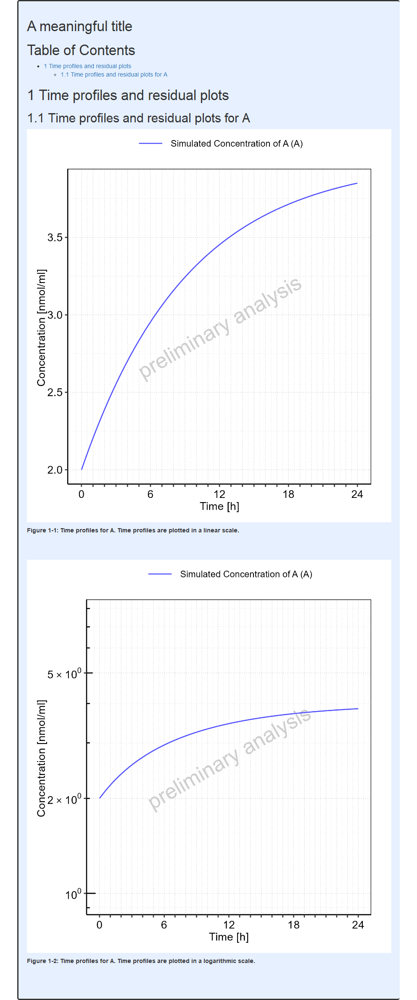
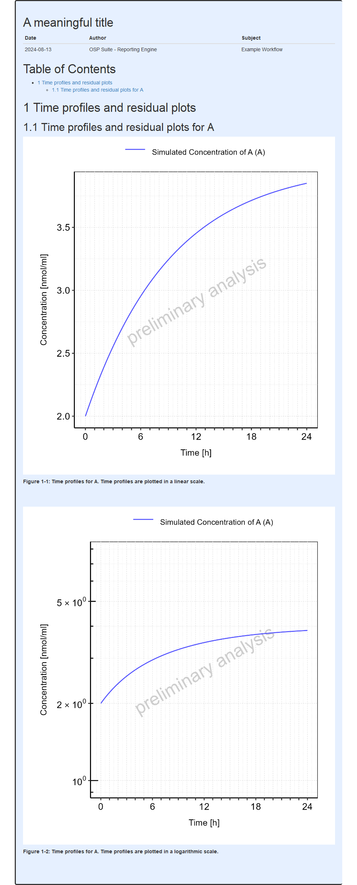

require(ospsuite.reportingengine)
#> Loading required package: ospsuite.reportingengine
#> Loading required package: ospsuite
#> Loading required package: rSharp
#>
#> Attaching package: 'ospsuite'
#> The following object is masked from 'package:base':
#>
#> %||%
#> Loading required package: tlf
#>
#> Attaching package: 'ospsuite.reportingengine'
#> The following object is masked from 'package:tlf':
#>
#> setDefaultErrorbarCapSizeIn Mean Model and Population workflows, title pages can be included
using the reportTitle input argument.
The example below will be used to illustrate the available options when adding a title page to the final report.
Code
# Get the pkml simulation file: "MiniModel2.pkml"
simulationFile <- system.file("extdata", "MiniModel2.pkml",
package = "ospsuite.reportingengine"
)
# Define the input parameters
outputA <- Output$new(
path = "Organism|A|Concentration in container",
displayName = "Concentration of A",
displayUnit = "nmol/ml"
)
setA <- SimulationSet$new(
simulationSetName = "A",
simulationFile = simulationFile,
outputs = outputA
)Add a title only
When only a title is needed as a title page, the workflow will
internally add the markdown title tag,
"#", to the
reportTitle as illustrated below.
Code
# Create the workflow instance with the report title
workflow <-
MeanModelWorkflow$new(
simulationSets = setA,
workflowFolder = "Example-1",
reportTitle = "A meaningful title"
)
#> 05/07/2024 - 12:30:23
#> i Info Reporting Engine Information:
#> Date: 05/07/2024 - 12:30:23
#> User Information:
#> Computer Name: fv-az742-366
#> User: runneradmin
#> Login: runneradmin
#> System is NOT validated
#> System versions:
#> R version: R version 4.4.1 (2024-06-14 ucrt)
#> OSP Suite Package version: 12.0.1088
#> OSP Reporting Engine version: 2.2
#> tlf version: 1.5.168
# Set the workflow tasks to be run
workflow$activateTasks(c("simulate", "plotTimeProfilesAndResiduals"))
# Run the workflow
workflow$runWorkflow()
#> 05/07/2024 - 12:30:23
#> i Info Starting run of Mean Model Workflow
#> 05/07/2024 - 12:30:23
#> i Info Starting run of Simulation task
#> 05/07/2024 - 12:30:25
#> i Info Splitting simulations for parallel run: 1 simulations split into 1 subsets
#> 05/07/2024 - 12:30:25
#> i Info Starting run of subset simulations
#> | | | 0% | |======================================================================| 100%
#> 05/07/2024 - 12:30:27
#> i Info Simulation task completed in 0.1 min
#> 05/07/2024 - 12:30:27
#> i Info Starting run of Plot Time profiles and Residuals task
#> 05/07/2024 - 12:30:27
#> i Info Starting run of Plot Time profiles and Residuals task for A
#> 05/07/2024 - 12:30:45
#> i Info Plot Time profiles and Residuals task completed in 0.3 min
#> 05/07/2024 - 12:30:45
#> i Info Executing: pandoc --embed-resources --standalone --wrap=none --toc --from=markdown+tex_math_dollars+superscript+subscript+raw_attribute --reference-doc="C:/Users/runneradmin/AppData/Local/Temp/RtmpOyM0nZ/temp_libpath6e03a0e2862/ospsuite.reportingengine/extdata/reference.docx" --resource-path="Example-1" -t docx -o "Example-1/Report-word.docx" "Example-1/Report-word.md"
#>
#> 05/07/2024 - 12:30:46
#> i Info Mean Model Workflow completed in 0.4 minReport
Add a title page
When the length of reportTitle is longer than 1, the
workflow will assume reportTitle is a more advanced title
page already formatted for markdown. In such cases,
reportTitle will used as is.
In the example below, the content of a more advanced title page is defined. The corresponding page includes
- A reference anchor that could be linked using
[Title page](#title-page) - A title with a markdown title tag
- A table (using
kablefor markdown formatting)
Code
titlePage <- c(
anchor("title-page"),
"",
"# A meaningful title",
"",
knitr::kable(
data.frame(
Date = Sys.Date(),
Author = "OSP Suite - Reporting Engine",
Subject = "Example Workflow"
)
)
)
# Here, it is more optimal to re-use the previous workflow
# since only the report title page is changed and the same results are used
workflow$inactivateTasks("simulate")
workflow$reportTitle <- titlePage
# Re-run the workflow with the new title page
workflow$runWorkflow()
#> 05/07/2024 - 12:30:50
#> i Info Starting run of Mean Model Workflow
#> 05/07/2024 - 12:30:50
#> i Info Starting run of Plot Time profiles and Residuals task
#> 05/07/2024 - 12:30:50
#> i Info Starting run of Plot Time profiles and Residuals task for A
#> 05/07/2024 - 12:30:51
#> i Info Plot Time profiles and Residuals task completed in 0 min
#> 05/07/2024 - 12:30:51
#> i Info Executing: pandoc --embed-resources --standalone --wrap=none --toc --from=markdown+tex_math_dollars+superscript+subscript+raw_attribute --reference-doc="C:/Users/runneradmin/AppData/Local/Temp/RtmpOyM0nZ/temp_libpath6e03a0e2862/ospsuite.reportingengine/extdata/reference.docx" --resource-path="Example-1" -t docx -o "Example-1/Report-word.docx" "Example-1/Report-word.md"
#>
#> 05/07/2024 - 12:30:51
#> i Info Mean Model Workflow completed in 0 minReport
Use a file as title page
Another option is to use a markdown file as cover page. In this case,
the file path can directly be defined in reportTitle and
the workflow will internally check that the file exists and include its
content.
The example below save the previously defined title page as a file named :
Code
titlePageFile <- "title-page.md"
write(
x = titlePage,
file = titlePageFile
)
# Here, it is more optimal to re-use the previous workflow
# since only the report title page is changed and the same results are used
workflow$reportTitle <- titlePageFile
# Re-run the workflow with the new title page
workflow$runWorkflow()
#> 05/07/2024 - 12:30:54
#> i Info Starting run of Mean Model Workflow
#> 05/07/2024 - 12:30:54
#> i Info Starting run of Plot Time profiles and Residuals task
#> 05/07/2024 - 12:30:54
#> i Info Starting run of Plot Time profiles and Residuals task for A
#> 05/07/2024 - 12:30:56
#> i Info Plot Time profiles and Residuals task completed in 0 min
#> 05/07/2024 - 12:30:56
#> i Info Executing: pandoc --embed-resources --standalone --wrap=none --toc --from=markdown+tex_math_dollars+superscript+subscript+raw_attribute --reference-doc="C:/Users/runneradmin/AppData/Local/Temp/RtmpOyM0nZ/temp_libpath6e03a0e2862/ospsuite.reportingengine/extdata/reference.docx" --resource-path="Example-1" -t docx -o "Example-1/Report-word.docx" "Example-1/Report-word.md"
#>
#> 05/07/2024 - 12:30:56
#> i Info Mean Model Workflow completed in 0 minReport
Note
Note that running the workflow won’t delete the title page. The title file can be re-used if the workflow needs to be re-run.
file.exists(titlePageFile)
#> [1] TRUE